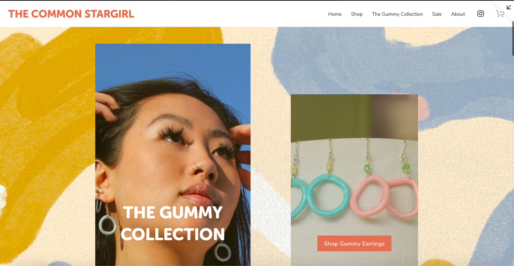
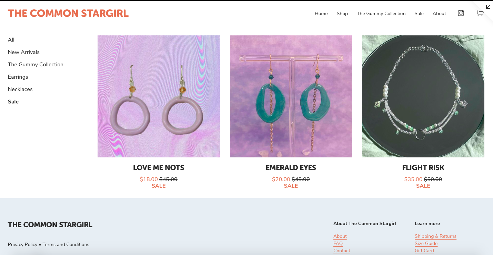

Squarespace
Creating a website for an imaginary business was one of my favorite projects this semester. A little background into the imaginary business, it's real! When I saw the requirements for the assignment, I thought it was a perfect opportunity to create a commercial website for my friend, Kayla. She currently handmakes all the jewelry that I included on the website, and I thought it was a great idea to show her the potential for her business. After showing her the finished product, she loved it. She even entertained the idea of having me make a real one for her!


Here is the Home page and the Sale page of The Common Stargirl website.
I enjoyed this assignment a lot because of the creative aspect that was required. Making the vibe of the website match The Common Stargirl's vibe was pretty easy. Similar to Wordpress, Squarespace has templates to work off of. Picking a template to work off of was the easiest way for me as a user with no knowledge. This made it rather tedious when I had to go through each item that was for sale and change the image, price, and description to fit The Common Stargirl.
In the future, I would definitely use this website again. One thing I dislike about Squarespace is that you must pay if you go past your free trial. This is discouraging, but with the simplicity of creating a commercial website on Squarespace, I can see the appeal.
Also, if you're interested in buying any jewelry from The Common Stargirl, you can follow @shopthecommonstargirl on Instagram! Support your local artists!